TELEVISION SHOWS
Season count includes Specials
| 2 Point 4 Children Year: 1991 Language: EN Format: mp4 Resolution: 480p Season Count: 9 |
| The 13 Ghosts of Scooby-Doo Year: 1985 Language: EN Format: mp4 Resolution: 480p Season Count: 1 |
| 1916: The Irish Rebellion Year: 2016 Language: EN Format: mp4 Resolution: 480p Season Count: 1 |
| The ABC Murders Year: 2018 Language: EN Format: mp4 Resolution: 720p Season Count: 1 |
| Absolutely Fabulous Year: 1992 Language: EN Format: mp4 Resolution: 480p Season Count: 7 |
| The Addams Family Year: 1964 Language: EN Format: mp4 Resolution: 480p Season Count: 3 |
| Adventure Year: 1961 Language: EN Format: mp4 Resolution: 576p Season Count: 2 |
| 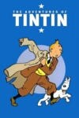 | The Adventures of Tintin Year: 1991 Language: EN Format: mp4 Resolution: 576p Season Count: 1 |
| Africa Year: 2013 Language: EN Format: mp4 Resolution: 1080p Season Count: 1 |
| Agatha Christie's Partners in Crime Year: 1983 Language: EN Format: mp4 Resolution: 1080p Season Count: 1 |
| Agatha Christie's Poirot Year: 1989 Language: EN Format: mp4 Resolution: 1080p Season Count: 13 |

| ALF Year: 1986 Language: EN Format: mp4 Resolution: 480p Season Count: 5 |
| 'Allo 'Allo! Year: 1982 Language: EN Format: mp4 Resolution: 480p Season Count: 10 |
| American Dad! Year: 2005 Language: EN Format: mp4 Resolution: 480p Season Count: 19 |
| Ancient Egypt: Life and Death in the Valley of the Kings Year: 2013 Language: EN Format: mp4 Resolution: 720p Season Count: 1 |
| And Then There Were None Year: 2015 Language: EN Format: mp4 Resolution: 1080p Season Count: 1 |
| Angels in America Year: 2003 Language: EN Format: mp4 Resolution: 720p Season Count: 1 |
| Animal Crime Scene Year: 2005 Language: EN Format: mp4 Resolution: 720p Season Count: 1 |
| 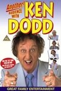 | Another Audience With Ken Dodd Year: 1978 Language: EN Format: mp4 Resolution: 576p Season Count: 1 |
| Are You Being Served? Year: 1972 Language: EN Format: mp4 Resolution: 480p Season Count: 11 |

| As Time Goes By Year: 1992 Language: EN Format: mp4 Resolution: 480p Season Count: 11 |
| Attenborough in Paradise and Other Personal Voyages Year: 1971 Language: EN Format: mp4 Resolution: 576p Season Count: 1 |
| Attenborough: 60 Years in the Wild Year: 2012 Language: EN Format: mp4 Resolution: 720p Season Count: 1 |
| Attenborough's Life in Colour Year: 2021 Language: EN Format: mp4 Resolution: 1080p Season Count: 2 |
| An Audience With Ken Dodd Year: 1976 Language: EN Format: mp4 Resolution: 576p Season Count: 1 |
| 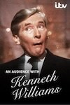 | An Audience With Kenneth Williams Year: 1977 Language: EN Format: mp4 Resolution: 576p Season Count: 0 |
| 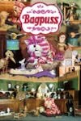 | Bagpuss Year: 1974 Language: EN Format: mp4 Resolution: 576p Season Count: 1 |
| Banana Year: 2015 Language: EN Format: mp4 Resolution: 576p Season Count: 1 |
| Beautiful People Year: 2008 Language: EN Format: mp4 Resolution: 480p Season Count: 2 |
| Benidorm Year: 2007 Language: EN Format: mp4 Resolution: 720p Season Count: 11 |
| The Benny Hill Show Year: 1969 Language: EN Format: mp4 Resolution: 480p Season Count: 20 |
| The Best of Frankie Howerd Year: 2004 Language: EN Format: mp4 Resolution: 480p Season Count: 1 |
| Beyond Paradise Year: 2023 Language: EN Format: mp4 Resolution: 1080p Season Count: 3 |
| The Big Bang Theory Year: 2007 Language: EN Format: mp4 Resolution: 720p Season Count: 12 |
| Big Boys Year: 2022 Language: EN Format: mp4 Resolution: 720p Season Count: 3 |
| Blackadder Year: 1983 Language: EN Format: mp4 Resolution: 1080p Season Count: 5 |
| Bless Me, Father Year: 1978 Language: EN Format: mp4 Resolution: 576p Season Count: 3 |
| 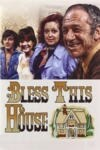 | Bless This House Year: 1971 Language: EN Format: mp4 Resolution: 480p Season Count: 6 |
| The Blue Planet Year: 2001 Language: EN Format: mp4 Resolution: 720p Season Count: 1 |
| Blue Planet II Year: 2017 Language: EN Format: mp4 Resolution: 1080p Season Count: 1 |
| The Borgias Year: 2011 Language: EN Format: mp4 Resolution: 720p Season Count: 3 |
| The Borgias Year: 1981 Language: EN Format: mp4 Resolution: 480p Season Count: 1 |
| Brideshead Revisited Year: 1981 Language: EN Format: mp4 Resolution: 480p Season Count: 1 |
| The Brittas Empire Year: 1991 Language: EN Format: mp4 Resolution: 720p Season Count: 7 |
| Broadway: The American Musical Year: 2004 Language: EN Format: mp4 Resolution: 480p Season Count: 1 |
| Butterflies Year: 1978 Language: EN Format: mp4 Resolution: 480p Season Count: 5 |
| 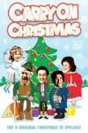 | Carry On Christmas Specials Year: 1969 Language: EN Format: mp4 Resolution: 720p Season Count: 1 |
| 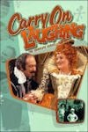 | Carry on Laughing Year: 1975 Language: EN Format: mp4 Resolution: 720p Season Count: 2 |
| Carta a Eva Year: 2012 Language: ES Format: mp4 Resolution: 480p Season Count: 1 |
| The Chronicles of Narnia Year: 1988 Language: EN Format: mp4 Resolution: 480p Season Count: 3 |
| Clangers Year: 1969 Language: EN Format: mp4 Resolution: 480p Season Count: 2 |
| 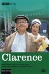 | Clarence Year: 1988 Language: EN Format: mp4 Resolution: 480p Season Count: 1 |
| The Cleopatras Year: 1983 Language: EN Format: mp4 Resolution: 480p Season Count: 1 |
| Come Fly With Me Year: 2010 Language: EN Format: mp4 Resolution: 480p Season Count: 1 |
| Cucumber Year: 2015 Language: EN Format: mp4 Resolution: 480p Season Count: 1 |
| Dad's Army Year: 1968 Language: EN Format: mp4 Resolution: 480p Season Count: 10 |
| Dad's Army: The Lost Episodes Year: 2019 Language: EN Format: mp4 Resolution: 480p Season Count: 1 |
| Dastardly & Muttley in Their Flying Machines Year: 1969 Language: EN Format: mp4 Resolution: 480p Season Count: 1 |
| David Attenborough's Conquest of the Skies Year: 2015 Language: EN Format: mp4 Resolution: 720p Season Count: 2 |
| David Attenborough's First Life Year: 2010 Language: EN Format: mp4 Resolution: 720p Season Count: 1 |
| David Attenborough's Natural Curiosities Year: 2013 Language: EN Format: mp4 Resolution: 720p Season Count: 4 |
| David Attenborough's Rise of Animals: Triumph of the Vertebrates Year: 2013 Language: EN Format: mp4 Resolution: 720p Season Count: 1 |
| David Attenborough's Wild City Year: 2015 Language: EN Format: mp4 Resolution: 1080p Season Count: 1 |
| Dear Ladies Year: 1983 Language: EN Format: mp4 Resolution: 576p Season Count: 3 |
| Death in Paradise Year: 2011 Language: EN Format: mp4 Resolution: 720p/1080p Season Count: 15 |
| 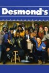 | Desmond's Year: 1989 Language: EN Format: mp4 Resolution: 480p Season Count: 6 |
| 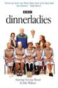 | dinnerladies Year: 1998 Language: EN Format: mp4 Resolution: 480p Season Count: 2 |
| The Doctor Blake Mysteries Year: 2013 Language: EN Format: mp4 Resolution: 480p Season Count: 5 |
| Doctor Who Year: 1963 Language: EN Format: mp4 Resolution: 480p Season Count: 27 |
| Doctor Who Year: 2005 Language: EN Format: mp4 Resolution: 1080p Season Count: 14 |
| Doctor Who Year: 2023 Language: EN Format: mp4 Resolution: 1080p Season Count: 3 |
| Doctor Who Confidential Year: 2005 Language: EN Format: mp4 Resolution: 720p Season Count: 8 |
| Doctor Who Extra Year: 2014 Language: EN Format: mp4 Resolution: 1080p Season Count: 4 |

| Doctor Who: Closer Look Year: 2018 Language: EN Format: mp4 Resolution: 720p Season Count: 3 |
| Don't Drink The Water Year: 1974 Language: EN Format: mp4 Resolution: 576p Season Count: 2 |
| Dynasties Year: 2018 Language: EN Format: mp4 Resolution: 1080p Season Count: 2 |
| Egypt - Rediscovering a Lost World Year: 2005 Language: EN Format: mp4 Resolution: 480p Season Count: 1 |
| Egypt Unwrapped Year: 2008 Language: EN Format: mp4 Resolution: 720p Season Count: 1 |
| 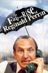 | The Fall and Rise of Reginald Perrin Year: 1976 Language: EN Format: mp4 Resolution: 480p Season Count: 3 |
| Fall of Eagles Year: 1974 Language: EN Format: mp4 Resolution: 480p Season Count: 1 |
| Family Guy Year: 1999 Language: EN Format: mp4 Resolution: 1080p Season Count: 23 |
| Father Brown Year: 1974 Language: EN Format: mp4 Resolution: 480p Season Count: 1 |
| Father Brown Year: 2013 Language: EN Format: mp4 Resolution: 720p/1080p Season Count: 12 |
| Father Ted Year: 1995 Language: EN Format: mp4 Resolution: 480p Season Count: 4 |
| Fawlty Towers Year: 1975 Language: EN Format: mp4 Resolution: 480p Season Count: 2 |
| Fellow Travelers Year: 2023 Language: EN Format: mp4 Resolution: 720p Season Count: 1 |
| 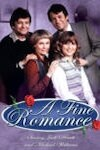 | A Fine Romance Year: 1981 Language: EN Format: mp4 Resolution: 480p Season Count: 4 |
| The First Eden Year: 1987 Language: EN Format: mp4 Resolution: 576p Season Count: 1 |
| The Flash Gordon Serials Year: 1936 Language: EN Format: mp4 Resolution: 480p Season Count: 3 |
| 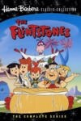 | The Flintstones Year: 1960 Language: EN Format: mp4 Resolution: 480p Season Count: 6 |
| Frankenstein Year: 2004 Language: EN Format: mp4 Resolution: 720p Season Count: 1 |
| Frozen Planet Year: 2011 Language: EN Format: mp4 Resolution: 1080p Season Count: 2 |
| Frozen Planet II Year: 2022 Language: EN Format: mp4 Resolution: 1080p Season Count: 1 |
| Futurama Year: 1999 Language: EN Format: mp4 Resolution: 720p Season Count: 9 |
| Galapagos with David Attenborough Year: 2013 Language: EN Format: mp4 Resolution: 720p Season Count: 2 |
| Game of Thrones Year: 2011 Language: EN Format: mp4 Resolution: 1080p Season Count: 8 |

| George and Mildred Year: 1976 Language: EN Format: mp4 Resolution: 480p Season Count: 5 |

| Gimme Gimme Gimme Year: 1999 Language: EN Format: mp4 Resolution: 480p Season Count: 3 |
| Going Straight Year: 1978 Language: EN Format: mp4 Resolution: 480p Season Count: 1 |
| 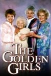 | The Golden Girls Year: 1985 Language: EN Format: mp4 Resolution: 480p Season Count: 7 |
| 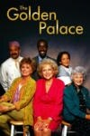 | The Golden Palace Year: 1992 Language: EN Format: mp4 Resolution: 480p Season Count: 1 |
| Good Omens Year: 2019 Language: EN Format: mp4 Resolution: 1080p Season Count: 3 |
| 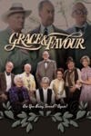 | Grace & Favour Year: 1992 Language: EN Format: mp4 Resolution: 480p Season Count: 2 |
| Great Barrier Reef with David Attenborough Year: 2015 Language: EN Format: mp4 Resolution: 1080p Season Count: 1 |

| The Great Egyptians Year: 1998 Language: EN Format: mp4 Resolution: 576p Season Count: 1 |
| The Great Rift: Africa's Wild Heart Year: 2010 Language: EN Format: mp4 Resolution: 720p Season Count: 1 |
| The Green Planet Year: 2022 Language: EN Format: mp4 Resolution: 1080p Season Count: 1 |
| Hallelujah! Year: 1983 Language: EN Format: mp4 Resolution: 480p Season Count: 2 |
| Hammer House of Horror Year: 1980 Language: EN Format: mp4 Resolution: 480p Season Count: 1 |
| Hark at Barker Year: 1969 Language: EN Format: mp4 Resolution: 576p Season Count: 2 |
| Heartstopper Year: 2022 Language: EN Format: mp4 Resolution: 1080p Season Count: 3 |
| 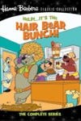 | Help! It's the Hair Bear Bunch Year: 1971 Language: EN Format: mp4 Resolution: 480p Season Count: 1 |
| 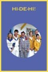 | Hi-de-Hi! Year: 1980 Language: EN Format: mp4 Resolution: 480p Season Count: 10 |
| The Hidden History of Egypt & Rome Year: 2002 Language: EN Format: mp4 Resolution: 576p Season Count: 1 |
| 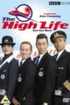 | The High Life Year: 1994 Language: EN Format: mp4 Resolution: 576p Season Count: 2 |
| Home from Home Year: 2016 Language: EN Format: mp4 Resolution: 480p Season Count: 2 |
| Hong Kong Phooey Year: 1974 Language: EN Format: mp4 Resolution: 480p Season Count: 1 |
| Hot in Cleveland Year: 2010 Language: EN Format: mp4 Resolution: 1080p Season Count: 6 |
| The Hound of the Baskervilles Year: 1982 Language: EN Format: mp4 Resolution: 480p Season Count: 1 |
| 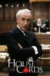 | House of Cards Year: 1990 Language: EN Format: mp4 Resolution: 480p Season Count: 3 |
| 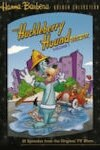 | The Huckleberry Hound Show Year: 1958 Language: EN Format: mp4 Resolution: 480p Season Count: 4 |
| Human Planet Year: 2011 Language: EN Format: mp4 Resolution: 720p Season Count: 1 |
| Human Universe Year: 2014 Language: EN Format: mp4 Resolution: 720p Season Count: 1 |
| The Hunt Year: 2015 Language: EN Format: mp4 Resolution: 720p Season Count: 1 |
| I, Claudius Year: 1976 Language: EN Format: mp4 Resolution: 576p Season Count: 1 |
| Immortal Egypt with Joann Fletcher Year: 2016 Language: EN Format: mp4 Resolution: 720p Season Count: 1 |
| In Loving Memory Year: 1969 Language: EN Format: mp4 Resolution: 480p Season Count: 6 |
| The Inca: Masters of the Clouds Year: 2015 Language: EN Format: mp4 Resolution: 720p Season Count: 1 |
| 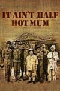 | It Ain't Half Hot Mum Year: 1974 Language: EN Format: mp4 Resolution: 480p Season Count: 8 |
| It's a Sin Year: 2021 Language: EN Format: mp4 Resolution: 720p Season Count: 1 |
| Jack the Ripper Year: 1988 Language: EN Format: mp4 Resolution: 1080p Season Count: 1 |
| Jam and Jerusalem Year: 2006 Language: EN Format: mp4 Resolution: 480p Season Count: 4 |
| Jesus: Rise to Power Year: 2013 Language: EN Format: mp4 Resolution: 480p Season Count: 1 |
| The Job Lot Year: 2013 Language: EN Format: mp4 Resolution: 480p Season Count: 3 |
| 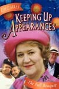 | Keeping Up Appearances Year: 1990 Language: EN Format: mp4 Resolution: 576p Season Count: 6 |

| Ken Dodd's Live Laughter Tour Year: N/A Language: EN Format: mp4 Resolution: 576p Season Count: 1 |

| Kingdom of Plants 3D Year: 2012 Language: EN Format: mp4 Resolution: 720p Season Count: 1 |
| 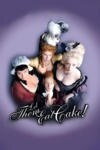 | Let Them Eat Cake Year: 1999 Language: EN Format: mp4 Resolution: 576p Season Count: 1 |

| Life Year: 2009 Language: EN Format: mp4 Resolution: 1080p Season Count: 1 |
| Life in Cold Blood Year: 2008 Language: EN Format: mp4 Resolution: 576p Season Count: 1 |
| 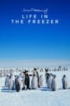 | Life in the Freezer Year: 1993 Language: EN Format: mp4 Resolution: 576p Season Count: 1 |
| 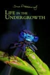 | Life in the Undergrowth Year: 2005 Language: EN Format: mp4 Resolution: 576p Season Count: 1 |
| The Life of Birds Year: 1998 Language: EN Format: mp4 Resolution: 576p Season Count: 2 |
| The Life of Mammals Year: 2002 Language: EN Format: mp4 Resolution: 720p Season Count: 1 |
| Life on Earth Year: 1979 Language: EN Format: mp4 Resolution: 720p Season Count: 1 |

| Life Story Year: 2014 Language: EN Format: mp4 Resolution: 720p Season Count: 1 |
| Little Britain Year: 2003 Language: EN Format: mp4 Resolution: 576p Season Count: 4 |
| Little Britain USA Year: 2008 Language: EN Format: mp4 Resolution: 480p Season Count: 1 |
| The Living Planet Year: 1984 Language: EN Format: mp4 Resolution: 576p Season Count: 2 |
| London Spy Year: 2015 Language: EN Format: mp4 Resolution: 1080p Season Count: 1 |
| Lost Kingdoms of Central America Year: 2014 Language: EN Format: mp4 Resolution: 720p Season Count: 1 |
| Lost Kingdoms of South America Year: 2013 Language: EN Format: mp4 Resolution: 720p Season Count: 1 |
| Lost Worlds, Vanished Lives Year: 1989 Language: EN Format: mp4 Resolution: 480p Season Count: 1 |
| Love Thy Neighbour Year: 1972 Language: EN Format: mp4 Resolution: 480p Season Count: 9 |
| Love, Victor Year: 2020 Language: EN Format: mp4 Resolution: 1080p Season Count: 3 |
| Madagascar Year: 2011 Language: EN Format: mp4 Resolution: 720p Season Count: 1 |
| The Magnificent Evans Year: 1984 Language: EN Format: mp4 Resolution: 480p Season Count: 1 |
| Man About the House Year: 1973 Language: EN Format: mp4 Resolution: 480p Season Count: 6 |
| Mary & George Year: 2024 Language: EN Format: mp4 Resolution: 1080p Season Count: 1 |
| Masters of the Pacific Coast: The Tribes of the American Northwest Year: 2016 Language: EN Format: mp4 Resolution: 1080p Season Count: 1 |
| The Mating Game Year: 2021 Language: EN Format: mp4 Resolution: 1080p Season Count: 1 |
| Merlin Year: 2008 Language: EN Format: mp4 Resolution: 1080p Season Count: 6 |
| Micro Monsters with David Attenborough Year: 2013 Language: EN Format: mp4 Resolution: 720p Season Count: 2 |
| Midsomer Murders Year: 1997 Language: EN Format: mp4 Resolution: 480p - 1080p Season Count: 25 |
| The Miracle of Bali Year: 1969 Language: EN Format: mp4 Resolution: 480p Season Count: 1 |
| Miracle Workers Year: 2019 Language: EN Format: mp4 Resolution: 1080p Season Count: 4 |
| Miss Marple Year: 1984 Language: EN Format: mp4 Resolution: 720p Season Count: 3 |
| Moby Dick Year: 1998 Language: EN Format: mp4 Resolution: 720p Season Count: 1 |
| Moby Dick Year: 2011 Language: EN Format: mp4 Resolution: 1080p Season Count: 1 |
| Monkey Year: 1978 Language: EN Format: mp4 Resolution: 480p Season Count: 2 |
| Monster Year: 2022 Language: EN Format: mp4 Resolution: 1080p Season Count: 3 |
| 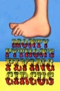 | Monty Python's Flying Circus Year: 1969 Language: EN Format: mp4 Resolution: 480p Season Count: 4 |
| Monty Python's Personal Best Year: 2006 Language: EN Format: mp4 Resolution: 480p Season Count: 1 |

| Mr. Pickles Year: 2013 Language: EN Format: mp4 Resolution: 1080p Season Count: 3 |
| Mrs Brown's Boys: The Original Series Year: 2006 Language: EN Format: mp4 Resolution: 480p Season Count: 1 |
| 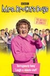 | Mrs. Brown's Boys Year: 2011 Language: EN Format: mp4 Resolution: 720p Season Count: 6 |
| 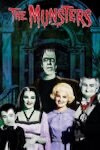 | The Munsters Year: 1964 Language: EN Format: mp4 Resolution: 480p Season Count: 3 |
| Mysterious Island Year: 1995 Language: EN Format: mp4 Resolution: 1080p Season Count: 1 |
| Nature's Great Events Year: 2009 Language: EN Format: mp4 Resolution: 720p Season Count: 1 |
| 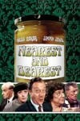 | Nearest and Dearest Year: 1968 Language: EN Format: mp4 Resolution: 480p Season Count: 7 |
| The New Pope Year: 2020 Language: EN Format: mp4 Resolution: 1080p Season Count: 1 |
| 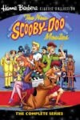 | The New Scooby-Doo Movies Year: 1972 Language: EN Format: mp4 Resolution: 480p Season Count: 2 |
| 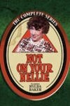 | Not on Your Nellie Year: 1974 Language: EN Format: mp4 Resolution: 480p Season Count: 3 |
| 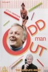 | Odd Man Out Year: 1977 Language: EN Format: mp4 Resolution: 480p Season Count: 1 |
| 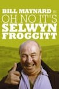 | Oh No It's Selwyn Froggitt Year: 1974 Language: EN Format: mp4 Resolution: 576p Season Count: 4 |
| 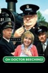 | Oh, Doctor Beeching! Year: 1995 Language: EN Format: mp4 Resolution: 480p Season Count: 3 |
| On the Buses Year: 1969 Language: EN Format: mp4 Resolution: 480p Season Count: 7 |
| 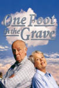 | One Foot in the Grave Year: 1990 Language: EN Format: mp4 Resolution: 720p Season Count: 7 |
| Only Fools and Horses Year: 1981 Language: EN Format: mp4 Resolution: 480p Season Count: 8 |
| Open All Hours Year: 1976 Language: EN Format: mp4 Resolution: 480p Season Count: 4 |
| Ordeal by Innocence Year: 2018 Language: EN Format: mp4 Resolution: 720p Season Count: 1 |
| Our Flag Means Death Year: 2022 Language: EN Format: mp4 Resolution: 1080p Season Count: 2 |
| Our Planet Year: 2019 Language: EN Format: mp4 Resolution: 1080p Season Count: 1 |
| Paddington Year: 1976 Language: EN Format: mp4 Resolution: 480p Season Count: 3 |
| The Pale Horse Year: 2020 Language: EN Format: mp4 Resolution: 1080p Season Count: 1 |
| Penny Dreadful Year: 2014 Language: EN Format: mp4 Resolution: 1080p Season Count: 3 |
| The People of Paradise Year: 1960 Language: EN Format: mp4 Resolution: 480p Season Count: 1 |
| A Perfect Planet Year: 2021 Language: EN Format: mp4 Resolution: 1080p Season Count: 1 |
| The Perils of Penelope Pitstop Year: 1969 Language: EN Format: mp4 Resolution: 480p Season Count: 1 |
| The Pink Panther Show Year: 1969 Language: EN Format: mp4 Resolution: 480p Season Count: 4 |
| Planet Earth Year: 2006 Language: EN Format: mp4 Resolution: 1080p Season Count: 1 |
| Planet Earth II Year: 2016 Language: EN Format: mp4 Resolution: 1080p Season Count: 1 |
| Planet Earth III Year: 2023 Language: EN Format: mp4 Resolution: 1080p Season Count: 1 |
| Planet Earth: The Future Year: 2006 Language: EN Format: mp4 Resolution: 576p Season Count: 1 |
| Plants Behaving Badly Year: 2017 Language: EN Format: mp4 Resolution: 480p Season Count: 1 |
| Please Sir! Year: 1968 Language: EN Format: mp4 Resolution: 480p Season Count: 4 |
| Police Squad! Year: 1982 Language: EN Format: mp4 Resolution: 480p Season Count: 1 |
| Porridge Year: 1974 Language: EN Format: mp4 Resolution: 480p Season Count: 4 |
| 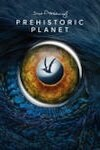 | Prehistoric Planet Year: 2022 Language: EN Format: mp4 Resolution: 1080p Season Count: 2 |
| Prisoner: Cell Block H Year: 1979 Language: EN Format: mp4 Resolution: 480p Season Count: 8 |
| The Private Life of Plants Year: 1995 Language: EN Format: mp4 Resolution: 576p Season Count: 2 |
| Quatermass Year: 1979 Language: EN Format: mp4 Resolution: 480p Season Count: 1 |
| Quatermass and the Pit Year: 1958 Language: EN Format: mp4 Resolution: 480p Season Count: 1 |
| The Quatermass Experiment Year: 1953 Language: EN Format: mp4 Resolution: 480p Season Count: 1 |
| Quatermass II Year: 1955 Language: EN Format: mp4 Resolution: 480p Season Count: 1 |
| Queer as Folk Year: 1999 Language: EN Format: mp4 Resolution: 480p Season Count: 2 |
| Queer as Folk Year: 2000 Language: EN Format: mp4 Resolution: 480p Season Count: 5 |
| Queers Year: 2017 Language: EN Format: mp4 Resolution: 720p Season Count: 1 |
| Rev. Year: 2010 Language: EN Format: mp4 Resolution: 1080p Season Count: 4 |
| Ripping Yarns Year: 1976 Language: EN Format: mp4 Resolution: 480p Season Count: 3 |
| 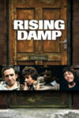 | Rising Damp Year: 1974 Language: EN Format: mp4 Resolution: 480p Season Count: 4 |
| Rome Year: 2005 Language: EN Format: mp4 Resolution: 1080p Season Count: 2 |
| The Royle Family Year: 1998 Language: EN Format: mp4 Resolution: 480p Season Count: 4 |
| Rumpole of the Bailey Year: 1978 Language: EN Format: mp4 Resolution: 480p Season Count: 8 |
| Santa Evita Year: 2022 Language: EN Format: mp4 Resolution: 720p Season Count: 1 |
| The Sarah Jane Adventures Year: 2007 Language: EN Format: mp4 Resolution: 480p Season Count: 6 |
| Schitt's Creek Year: 2015 Language: EN Format: mp4 Resolution: 1080p Season Count: 6 |
| Scooby-Doo and Scrappy-Doo Year: 1979 Language: EN Format: mp4 Resolution: 480p Season Count: 6 |
| The Scooby-Doo Show Year: 1976 Language: EN Format: mp4 Resolution: 480p Season Count: 3 |
| 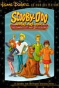 | Scooby-Doo, Where Are You! Year: 1969 Language: EN Format: mp4 Resolution: 480p Season Count: 3 |
| 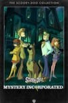 | Scooby-Doo! Mystery Incorporated Year: 2010 Language: EN Format: mp4 Resolution: 480p Season Count: 2 |
| Secrets of the Krays Year: 2021 Language: EN Format: mp4 Resolution: 480p Season Count: 1 |
| Secrets of Wild India Year: 2012 Language: EN Format: mp4 Resolution: 1080p Season Count: 1 |
| See No Evil: The Moors Murders Year: 2006 Language: EN Format: mp4 Resolution: 480p Season Count: 1 |
| Seven of One Year: 1973 Language: EN Format: mp4 Resolution: 480p Season Count: 1 |
| Seven Worlds, One Planet Year: 2019 Language: EN Format: mp4 Resolution: 1080p Season Count: 1 |
| Sex Education Year: 2019 Language: EN Format: mp4 Resolution: 1080p Season Count: 4 |
| Shark Year: 2015 Language: EN Format: mp4 Resolution: 480p Season Count: 1 |
| Sherlock Year: 2010 Language: EN Format: mp4 Resolution: 1080p Season Count: 5 |
| Sherlock Holmes Year: 1964 Language: EN Format: mp4 Resolution: 480p Season Count: 3 |
| Sherlock Holmes Year: 1984 Language: EN Format: mp4 Resolution: 1080p Season Count: 7 |
| 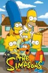 | The Simpsons Year: 1989 Language: EN Format: mp4 Resolution: 1080p Season Count: 36 |
| Sister Boniface Mysteries Year: 2022 Language: EN Format: mp4 Resolution: 720p/1080p Season Count: 4 |
| Six Dates with Barker Year: 1971 Language: EN Format: mp4 Resolution: 480p Season Count: 1 |
| Smiley's People Year: 1982 Language: EN Format: mp4 Resolution: 720p Season Count: 1 |
| Snagglepuss Year: 1961 Language: EN Format: mp4 Resolution: 480p Season Count: 2 |
| Some Mothers Do 'Ave 'Em Year: 1973 Language: EN Format: mp4 Resolution: 480p Season Count: 4 |
| Sorry! Year: 1981 Language: EN Format: mp4 Resolution: 480p Season Count: 7 |
| Space: 1999 Year: 1975 Language: EN Format: mp4 Resolution: 480p Season Count: 2 |
| Spartacus Year: 2010 Language: EN Format: mp4 Resolution: 720p Season Count: 4 |
| Star Trek Year: 1966 Language: EN Format: mp4 Resolution: 720p Season Count: 3 |
| Star Trek: Deep Space Nine Year: 1993 Language: EN Format: mp4 Resolution: 480p Season Count: 7 |
| Star Trek: Discovery Year: 2017 Language: EN Format: mp4 Resolution: 1080p Season Count: 5 |
| 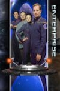 | Star Trek: Enterprise Year: 2001 Language: EN Format: mp4 Resolution: 480p Season Count: 4 |

| Star Trek: Picard Year: 2020 Language: EN Format: mp4 Resolution: 1080p Season Count: 3 |
| Star Trek: Strange New Worlds Year: 2022 Language: EN Format: mp4 Resolution: 1080p Season Count: 3 |
| Star Trek: The Animated Series Year: 1973 Language: EN Format: mp4 Resolution: 1080p Season Count: 2 |
| Star Trek: The Next Generation Year: 1987 Language: EN Format: mp4 Resolution: 1080p Season Count: 7 |
| 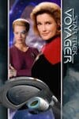 | Star Trek: Voyager Year: 1995 Language: EN Format: mp4 Resolution: 480p Season Count: 7 |
| State of the Planet Year: 2000 Language: EN Format: mp4 Resolution: 480p Season Count: 1 |
| Stephen Fry: Out There Year: 2013 Language: EN Format: mp4 Resolution: 720p Season Count: 1 |
| Steptoe and Son Year: 1962 Language: EN Format: mp4 Resolution: 480p Season Count: 9 |
| Still Open All Hours Year: 2013 Language: EN Format: mp4 Resolution: 720p Season Count: 6 |
| Taboo Year: 2017 Language: EN Format: mp4 Resolution: 1080p Season Count: 1 |
| Tales of the City Year: 1993 Language: EN Format: mp4 Resolution: 480p Season Count: 3 |
| 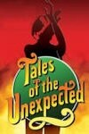 | Tales of the Unexpected Year: 1979 Language: EN Format: mp4 Resolution: 480p Season Count: 9 |
| Terry and Julian Year: 1992 Language: EN Format: mp4 Resolution: 480p Season Count: 1 |
| Then Churchill Said to Me Year: 1993 Language: EN Format: mp4 Resolution: 480p Season Count: 1 |
| 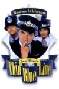 | The Thin Blue Line Year: 1995 Language: EN Format: mp4 Resolution: 480p Season Count: 2 |
| This Is Going To Hurt Year: 2022 Language: EN Format: mp4 Resolution: 1080p Season Count: 1 |
| This Life Year: 1996 Language: EN Format: mp4 Resolution: 480p Season Count: 3 |
| Tinker Tailor Soldier Spy Year: 1979 Language: EN Format: mp4 Resolution: 720p Season Count: 1 |
| To the Manor Born Year: 1979 Language: EN Format: mp4 Resolution: 480p Season Count: 3 |
| 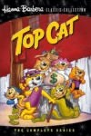 | Top Cat Year: 1961 Language: EN Format: mp4 Resolution: 480p Season Count: 1 |
| Torchwood Year: 2006 Language: EN Format: mp4 Resolution: 720p Season Count: 4 |
| Trials of Life Year: 1990 Language: EN Format: mp4 Resolution: 480p Season Count: 2 |
| The Tribal Eye Year: 1975 Language: EN Format: mp4 Resolution: 480p Season Count: 1 |
| The Truth About Climate Change Year: 2006 Language: EN Format: mp4 Resolution: 480p Season Count: 1 |

| The Tudors Year: 2007 Language: EN Format: mp4 Resolution: 1080p Season Count: 4 |
| Two Pints of Lager and a Packet of Crisps Year: 2001 Language: EN Format: mp4 Resolution: 480p Season Count: 10 |
| 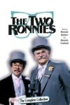 | The Two Ronnies Year: 1971 Language: EN Format: mp4 Resolution: 480p Season Count: 13 |
| 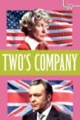 | Two's Company Year: 1975 Language: EN Format: mp4 Resolution: 480p Season Count: 5 |
| Up Pompeii Year: 1969 Language: EN Format: mp4 Resolution: 480p Season Count: 3 |
| Vera Year: 2011 Language: EN Format: mp4 Resolution: 1080p Season Count: 15 |
| Versailles Year: 2015 Language: EN Format: mp4 Resolution: 1080p Season Count: 3 |
| A Very English Scandal Year: 2018 Language: EN Format: mp4 Resolution: 720p Season Count: 1 |
| The Vicar of Dibley Year: 1994 Language: EN Format: mp4 Resolution: 480p Season Count: 4 |

| Vicious Year: 2013 Language: EN Format: mp4 Resolution: 480p Season Count: 3 |
| Victoria Wood: As Seen on TV Year: 1985 Language: EN Format: mp4 Resolution: 480p Season Count: 2 |
| Wacky Races Year: 1968 Language: EN Format: mp4 Resolution: 480p Season Count: 1 |
| 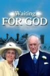 | Waiting for God Year: 1990 Language: EN Format: mp4 Resolution: 480p Season Count: 6 |
| The Water Margin Year: 1973 Language: EN Format: mp4 Resolution: 480p Season Count: 2 |
| 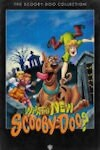 | What's New Scooby-Doo? Year: 2002 Language: EN Format: mp4 Resolution: 480p Season Count: 3 |
| Whoops Apocalypse Year: 1982 Language: EN Format: mp4 Resolution: 480p Season Count: 1 |
| Wild Brazil Year: 2014 Language: EN Format: mp4 Resolution: 720p Season Count: 1 |
| Wild China Year: 2008 Language: EN Format: mp4 Resolution: 720p Season Count: 1 |
| Willo the Wisp Year: 1981 Language: EN Format: mp4 Resolution: 480p Season Count: 1 |
| The Windsors Year: 2016 Language: EN Format: mp4 Resolution: 480p Season Count: 4 |
| The Witness for the Prosecution Year: 2016 Language: EN Format: mp4 Resolution: 480p Season Count: 1 |
| The Wombles Year: 1973 Language: EN Format: mp4 Resolution: 720p Season Count: 2 |
| Years and Years Year: 2019 Language: EN Format: mp4 Resolution: 720p Season Count: 1 |
| Yes Minister Year: 1980 Language: EN Format: mp4 Resolution: 480p Season Count: 4 |
| Yes, Prime Minister Year: 1986 Language: EN Format: mp4 Resolution: 480p Season Count: 2 |
| The Yogi Bear Show Year: 1961 Language: EN Format: mp4 Resolution: 480p Season Count: 3 |
| You Rang, M'Lord? Year: 1988 Language: EN Format: mp4 Resolution: 480p Season Count: 5 |

| You're Only Young Twice Year: 1977 Language: EN Format: mp4 Resolution: 480p Season Count: 4 |
| The Young Offenders Year: 2018 Language: EN Format: mp4 Resolution: 720p Season Count: 4 |
| The Young Pope Year: 2016 Language: EN Format: mp4 Resolution: 720p Season Count: 1 |
| Young Royals Year: 2021 Language: EN Format: mp4 Resolution: 1080p Season Count: 3 |
| Zorro Year: 1957 Language: EN Format: mp4 Resolution: 480p Season Count: 3 |